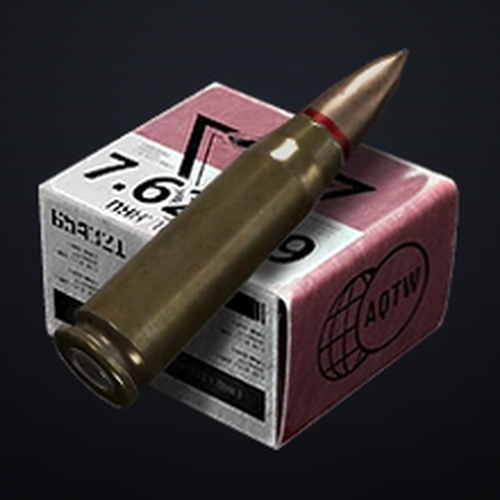
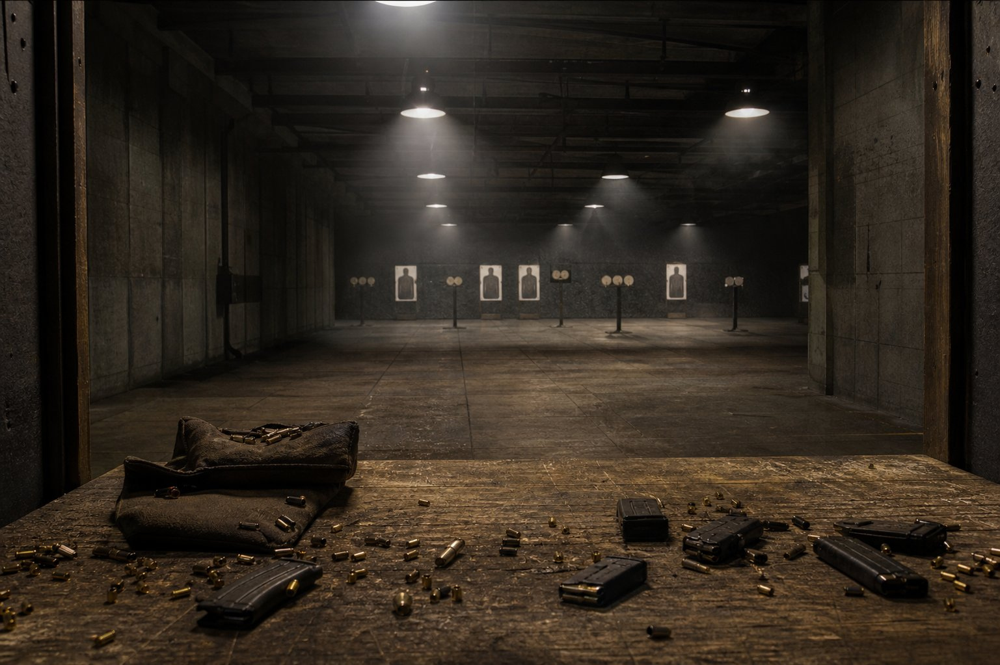
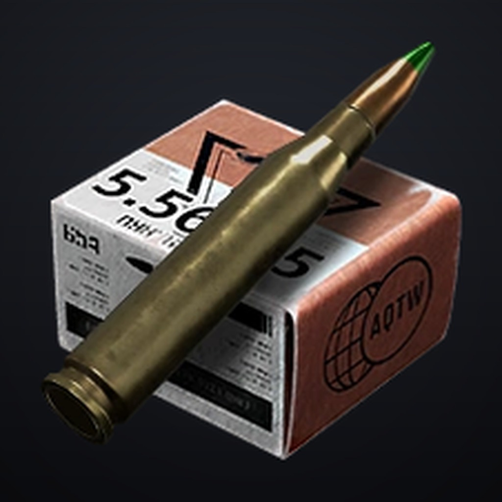

1. Comment fonctionne la pénétration
En ABI, la munition ne « perce » pas : elle est classée. Chaque munition affiche une valeur de Pénétration ; on en déduit son Pierce Level — le niveau de pénétration — par la formule communautaire issue du tableau officiel :
La formule à retenir
Pierce Level = plancher(Pénétration ÷ 10)
Une cartouche à 47 de pénétration est donc un Pierce Level 4. Le jeu compare ce niveau au Niveau d'armure de la plaque visée. En dessous, la balle rebondit (ou se déforme) sans percer.
Le changement de la Saison 7 : jusqu'à la S6, une munition sous le niveau de la plaque T5 ou T6 avait une petite chance de passer. Cette « loterie » a été supprimée. Résultat : le combat à haut niveau est devenu déterministe, et le TTK au torse plus long — il faut ramener la durabilité de la plaque sous un seuil pour percer de façon constante.
2. L'échelle des Pierce Level
| Pierce Level | Pénétration | Contre | Exemples | Usage |
|---|---|---|---|---|
| 0–1 | ~0–19 | Classe 1 | 9×19 de base, 7.62×25 Pst, .45 FMJ | Pistolet, jambes non protégées |
| 2 | ~20–29 | Classe 2 | 5.45 PS, 9×19 Pst, 7.62×39 US | Début de raid, armure légère |
| 3 | ~30–39 | Classe 3 | 5.56 M855, 7.62×39 T45M / PS | Confortable contre la classe 3 |
| 4 | ~40–49 | Classe 4 | 5.56 M855A1, 7.62×39 BP, 5.45 BP | Le standard du rapport qualité/prix |
| 5 | ~50–59 | Classe 5 | 5.45 BS, 5.56 M995, 7.62×51 M62 | Lockdown, anti-armure haute |
| 6 | ~60–71 | Classe 6 | 7.62×54 7N37 (PL 7), .338 AP (PL 6) | Forbidden, uniquement |
Attention aux calibres qui se ressemblent
5.56×45, 5.45×39 et 5.8×42 sont trois munitions différentes. Idem pour les quatre 7.62 (×25, ×39, ×51, ×54), et pour 9×19 (pistolet) contre 9×39 (fusil). Rien ne se mélange : l'erreur de munition dans un sac se paie cher.
3. Quelle munition pour quel mode
| Mode | Plafond | Munitions recommandées | Budget |
|---|---|---|---|
| Normal | T4 et moins | M855A1 (5.56), BP (7.62×39), 7N31 (9×19) | Le sweet spot de la communauté |
| Lockdown | T5 et moins | M855A1, M995, 5.45 BS, 7.62×51 M62 | Une classe au-dessus du T4 |
| Forbidden | T6 autorisé | .338 AP (PL 6), 7.62×54 SNB (PL 6), PPBS (PL 6), 7N37 (PL 7) | Cher, et à réserver aux raids Forbidden |
| Infected Zone | Selon la zone | Idem Normal/Lockdown + munitions à chair contre les horde | Heavy sur Farm et Airport |
Le piège de la valeur immobilisée
En Normal, votre stock de munitions T6 est de la valeur bloquée : vous ne pouvez pas l'emporter. Emportez des cartouches T4 — le M855A1 et le BP sont cités par la communauté comme le meilleur compromis pénétration/prix.
Ce n'est pas l'armure qui tue, c'est la munition
La phrase est courte et elle synthétise le conseil la plus utile de la Saison 7 : une armure ne remplace pas une munition adaptée. Une cartouche de tier 2 envoyée sur une plaque de tier 4 ne fait presque rien — la balle rebondit ou se déforme sans percer. À l'inverse, une arme modeste équipée de munitions de tier 3 ou 4 bat un fusil entièrement modifié qui tire des munitions de tier 1. La règle que la communauté répète le plus : « Matching a cheap weapon with high-tier ammo is infinitely better than running a fully modded, expensive rifle firing Tier 1 or Tier 2 trash rounds. » Communautaire
4. Les calibres et les armes qui les partagent
Avec 81 armes et 14 calibres, choisir un calibre, c'est choisir une famille d'armes. Les deux plus gros groupes :
| Calibre | Armes | Nombre | Armeshed |
|---|---|---|---|
| 5.56×45mm | H416, M4A1, MCX, SCAR-L, AUG, MDR, AK-102, M16, FAMAS, SG550, Mini14, M96, F2000 | 13 | Le plus polyvalent du jeu |
| 9×19mm | PP19, MP5, MPX, Vector 9, Uzi, PCC-9, MP9, MP40, G18C, G17, M9A3, T05 | 12 | SMG et pistolet : imbattable en CQB et contre les zombies |
| 7.62×51mm | M24, Mk14, M110, M14, FAL, BM59, G3 | 7 | Puissance longue distance |
| 7.62×39mm | AEK, CZ807, ACE31, AK-15SC, AKM, SKS, SA85M | 7 | La famille AK, dont la nouvelle AK-15SC |
| .45 | UMP45, Vector 45, MAC-10, MPF45, M3A1, M1911, M45A1 | 7 | Alternative US en CQB |
| 5.45×39mm | AK12, A545, RPK-16, AK-74N, AN-94, AKS-74U | 6 | La famille de l'A545 |
| 5.8×42mm | T192, T951, U191, T88, T03 (+ autres) | 6 | Le calibre du U191 |
| 7.62×25mm | T85, T79, QC61, CZ52, T54 | 5 | Pistolets-mitraillettes |
| 5.7×28mm | AR-57, Banshee, P90, F57 | 4 | Le bloc P90 / AR-57 |
| 7.62×54mm | SVDS, Mosin, SVTU | 3 | Les snipers russes, dont le 7N37 (PL 7) |
| 9×39mm | VSS, AMB-17 | 2 | Subsonique : VSS et AMB-17 uniquement |
La règle du stock intelligent
Ne stockez pas « une arme », stockez un calibre. 5.56×45 couvre 13 armes, 9×19 en couvre 12 : un stock de l'un ou l'autre s'adaptera presque toujours à l'arme que vous sortez. Le 5.45×39 est confirmé par les notes S7 pour l'A545 ; l'AK-15SC est rattachée au 7.62×39 par les notes officielles, mais certains guides communautaires la rattachent au 7.62×51 : les quatre 7.62 ne se mélangent pas, vérifiez la fiche de l'arme avant de faire le plein.
Le top-loading : un chargeur à deux étages
Le chargeur ne se vide pas au hasard : il part par le haut. Charger les premières balles en munitions hautes et le reste du chargeur en munitions bon marché donne une rafale d'ouverture à pleine pénétration, puis un appoint ordinaire pour la suite du combat. C'est le top-loading.
Concrètement : sur un FAL en 7.62×51, dix balles de M80 (Tier 4) ou de M62 (Tier 5) en haut du chargeur, le reste en munitions d'appoint ; sur un A545 en 5.45×39, le même principe avec la 7N39 (Tier 5) ou les PPBS (Tier 6). Les guides S7 citent aussi le chargeur « top-loadé » comme l'un des leviers les plus rentables en Forbidden.
Le calcul est simple : vous ne payez la munitions haute que pour les dix premières balles, et ce sont précisément celles qui ouvrent le feu. Sur un budget serré, c'est le meilleur rapport « pénétration dépensée / balles transportées » de tout le jeu.
Source : guides communautaires de la Saison 7 et retours de joueurs — Communautaire, non publiée par l'éditeur. L'ordre de dégagement du chargeur est le comportement standard du jeu, mais vérifiez-le une fois en Terrain d'entraînement avant de reconstruire vos chargeurs sur cette hypothèse.
5. Les munitions spéciales qui méritent un slot
| Munition | Calibre | Spécialité | Usage |
|---|---|---|---|
| Dum-Dum | 9×19 | Dégâts à la chair, Pierce Level très bas | Meta jambes et horde de zombies : ça scie des rangs entiers |
| AP6.3 | 9×19 | Pierce Level 3 en 9×19 | La solution low-cost en CQB avec le MPX |
| M855A1 | 5.56×45 | Pierce Level 4, 47 dégâts chair | Le standard du budget sérieux |
| BP | 7.62×39 | Pierce Level 4, 55 dégâts chair, 23 dégâts d'armure | Idem, pour les calibres AK ; le BP 5.45 fait 45 dégâts et 17 dégâts d'armure |
| 5.7×28 SS190 | 5.7×28 | Pierce Level 4, 47 dégâts chair, 18 dégâts d'armure | Le bloc P90 / AR-57 : la munition T4 de référence du calibre |
| 7N37 | 7.62×54 | Pierce Level 7 — le sommet du tableau | Le seul qui perce la classe 6 en_regular |
| .338 AP | .338 | Pierce Level 6 (pénétration 64), 90 dégâts chair, 55 dégâts d'armure | Réservé au Forbidden (interdit en Normal/Lockdown) |
| PPBS | 5.45×39 | T6, pénétration 62 | La pointe de lance 5.45 pour l'A545 et l'AK-12 |
6. Les munitions rouges : craft, pas achat
- Les munitions T6 et T7 (les « red ammo ») se craftent : niveau 3 de Workbench pour la T6, niveau 4 pour la T7.
- Depuis la Saison 6, le Marché et les Contacts les ont délistés : on ne les achète plus, on les fabrique.
- Depuis la S6, les munitions rouges ne peuvent pas être placées en case sécurisée : magazines ou sac, jamais la case.
- Les recettes T6 apparaissent une fois le Workbench niveau 3 atteint ; la T7 exige le niveau 4.
Ne transportez que ce dont vous avez besoin
Emportez un petit compte de red ammo, uniquement quand l'extraction est probable (Farm / Northridge en file classique). Les munitions rouges se transportent mal, ne rentrent pas dans les cases sécurisées, et une mort en raid les détruit.
7. Comment lire le tableau dans le jeu
- Ouvrez la fiche d'une munition et relevez sa valeur de Pénétration.
- Divisez par 10 et arrondissez à l'entier inférieur : vous avez son Pierce Level.
- Comparez avec le Niveau d'armure de la cible (classe 1 à 6).
- Ajustez le mode : Normal → plafond T4, Lockdown → plafond T5, Forbidden → T6.
- Vérifiez dans le même onglet le type de munition disponible pour votre arme (chargeur, boîte, vrac).
9. Simulateur balistique — pénétration et TTK
Les tableaux ci-dessus répondent à « quelle munition choisir ». Ce simulateur répond à la question qui décide vraiment d'un duel : avec cette munition et cette armure, est-ce que je perce, et en combien de balles ? Le modèle applique les règles de la Saison 7 — le Pierce Level vaut le plancher de la pénétration ÷ 10 — et le barème communautaire, cohérent sur tous les guides de la saison :
Pierce Level contre classe d'armure. Un Pierce Level supérieur à la classe de la plaque traverse et inflige la totalité des dégâts chair. Un Pierce Level égal donne une pénétration partielle, autour de 80 % des dégâts chair. Un Pierce Level inférieur fait ricocher la balle, autour de 50 % — et, en Saison 7, la loterie de pénétration a été supprimée sur les plaques T5 et T6 : ce verdict est désormais déterministe.
La durabilité est une arme à part entière. Chaque tir dégrade la plaque : la Sustained Fire est une technique à part entière. Insister sur la même zone use la plaque jusqu'à l'ouvrir, et permet à une munition sous-tier de finir par percer. Enfin, contre une cible dont le torse est nu, la full flesh damage s'applique intégralement — c'est ce qui rend les armes de CQB redoutables en mode Normal, où le plafond de T4 laisse passer des configurations très abordables.
Avertissement sur les tableaux non officiels
Morefun ne publie pas de tableau de pénétration round-by-round. Les valeurs exactes de chaque cartouche sont donc des données communautaires, utiles comme point de départ mais à confirmer sur la fiche de l'objet dans votre client. Vérifiez toujours avant une sortie coûteuse.
8. Récapitulatif — le kit munitions parfait
- Normal : M855A1 ou BP, 3 chargeurs de 30 + 2 chargeurs de secours. Comptez ~150 cartouches.
- Lockdown : idem en T5 (M995 / 5.45 BS / 7.62×51 M62) si votre cible est équipée.
- Forbidden : 7N37 ou .338 AP, en petit volume, jamais en case.
- Zombies (Infected Zone / Endless) : dum-dum 9×19 + shotgun : le meta Literal des horde, ce n'est pas la pénétration qui compte mais les dégâts de groupe.
- Toujours un lot de munitions de chaque calibre du squad : un mort avec vos munitions, c'est un squad privé de munitions.
Pour le détail de la Fabrication de ces munitions, voir le guide Workbench. Pour l'armure qui va avec, voir le guide des armures.